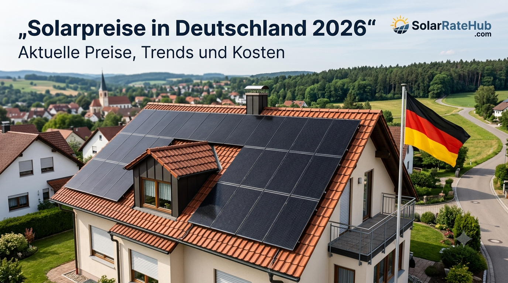

SOLARPREISE DEUTSCHLAND
Solarpreise in Deutschland 2026: Aktuelle Preise am 28. August
Wie viel kostet eine Photovoltaikanlage in Deutschland im Jahr 2026? Die Antwort hängt von Anlagengröße, Modulen, Wechselrichter, Dach, Montage und Speicher ab. Hier findest du aktuelle Marktspannen und eine einfache Orientierung für die Planung.
Stand: 28. August 2026 · SolarRateHub Marktübersicht

Was kostet eine Solaranlage in Deutschland 2026?
Aktuelle Preisübersichten zeigen, dass kleine und mittlere Dachanlagen in Deutschland häufig im Bereich von etwa 1.100 bis 1.600 € pro kWp liegen. Andere Marktbeobachtungen nennen für schlüsselfertige Anlagen breitere Spannen von rund 1.200 bis 1.800 € pro kWp. Deshalb sollte ein einzelner Durchschnittswert nicht als festes Angebot verstanden werden.
Für ein typisches Einfamilienhaus mit 8 bis 12 kWp ergibt sich ohne Speicher häufig eine Größenordnung von etwa 10.000 bis 19.000 €. Mit Batteriespeicher kann die Gesamtsumme je nach Kapazität und Technik deutlich höher ausfallen.
Aktuelle Preisorientierung nach Anlagengröße
| Anlagengröße | Grobe Kosten ohne Speicher | Orientierung pro kWp |
|---|---|---|
| 5 kWp | ca. 7.500–9.500 € | 1.500–1.900 €/kWp |
| 8 kWp | ca. 10.400–13.600 € | 1.300–1.700 €/kWp |
| 10 kWp | ca. 10.000–18.000 € | ca. 1.000–1.800 €/kWp |
| 12 kWp | ca. 14.400–19.200 € | 1.200–1.600 €/kWp |
| 15 kWp | ca. 18.000–27.000 € | ca. 1.200–1.800 €/kWp |
Die Spannen sind Markt- und Planungswerte. Dachform, Region, Montage, Gerüst, Wechselrichter und Anbieter können den Endpreis deutlich verändern.
Was kosten Solarmodule allein?
Der reine Modulpreis ist nicht mit dem Preis einer fertigen PV-Anlage vergleichbar. Für einzelne Solarmodule werden 2026 im deutschen Markt – abhängig von Leistung und Technologie – grob etwa 0,10 bis 0,18 €/Wp als Endkunden-Orientierung genannt. Ein modernes 450-Wp-Modul kann damit beispielsweise in einer Größenordnung von einigen Dutzend Euro liegen.
TOPCon- und Glas-Glas-Module können teurer sein als einfache Standardmodule. Dafür bieten sie je nach Modell Vorteile bei Wirkungsgrad, Temperaturverhalten oder Langzeitstabilität.
Photovoltaik mit Speicher: Wie stark steigt der Preis?
Ein Batteriespeicher erhöht die Anfangsinvestition, kann aber den Eigenverbrauch steigern. Marktbeobachtungen für 2026 nennen häufig etwa 300 bis 700 € pro kWh Speicherkapazität, je nach System, Anbieter und Installationsumfang.
| Speichergröße | Grobe zusätzliche Orientierung |
|---|---|
| 5 kWh | ca. 1.500–3.500 € |
| 10 kWh | ca. 3.000–7.000 € |
| 15 kWh | ca. 4.500–10.500 € |
Die Werte sind bewusst als Bandbreiten formuliert. Ein Komplettpaket kann wegen Wechselrichter, Installation, Energiemanagement und weiterer Komponenten erheblich anders kalkuliert werden.
Warum unterscheiden sich Solarpreise in Deutschland so stark?
- Dach und Montage: Ein einfaches Satteldach ist meist leichter zu installieren als ein komplexes Dach mit vielen Flächen.
- Systemgröße: Größere Anlagen können einen niedrigeren Preis pro kWp erreichen.
- Module: Leistung, Wirkungsgrad, Zelltechnologie und Garantie beeinflussen den Preis.
- Wechselrichter: String-Wechselrichter, Hybridgeräte und Mikro-Wechselrichter haben unterschiedliche Kosten.
- Speicher: Kapazität, Notstromfunktion und Energiemanagement verändern die Gesamtkosten.
- Region: Arbeitskosten, Gerüst, Netzanschluss und lokale Anbieterpreise unterscheiden sich.
0 % Umsatzsteuer: Was gilt 2026?
Für bestimmte Photovoltaikanlagen gilt in Deutschland weiterhin der Nullsteuersatz. Das Bundesministerium der Finanzen erklärt, dass nach § 12 Abs. 3 UStG bei begünstigten Anlagen auf oder in der Nähe von Privatwohnungen unter den gesetzlichen Voraussetzungen 0 % Umsatzsteuer für Solarmodule und wesentliche Komponenten einschließlich bestimmter Speicher gelten können.
Die genaue steuerliche Behandlung hängt vom konkreten Projekt ab. Vor dem Kauf sollte geprüft werden, ob die Voraussetzungen im jeweiligen Fall erfüllt sind.
Was ist beim Kauf einer Solaranlage wichtiger als der niedrigste Preis?
- Gesamtleistung in kWp und erwartete Jahresproduktion vergleichen.
- Modulmodell, Leistung, Wirkungsgrad und Garantie prüfen.
- Wechselrichtermodell und Garantie separat vergleichen.
- Montage, Gerüst, Anmeldung und Netzanschluss im Angebot prüfen.
- Bei Speicher: nutzbare Kapazität und Garantie beachten.
- Mindestens mehrere schriftliche Angebote vergleichen.
- Nicht nur den Gesamtpreis, sondern auch Preis pro kWp betrachten.
- Bei ungewöhnlich niedrigen Preisen genau prüfen, welche Leistungen fehlen.
Solaranlage schnell einschätzen
Mit dem SolarRateHub-Rechner kannst du Systemgröße, Kostenannahmen und mögliche Einsparungen als erste Orientierung vergleichen.
Solar Calculator öffnen →Fazit: Wie hoch sind die Solarpreise in Deutschland 2026?
Am 28. August 2026 liegt die praktische Preisorientierung für eine schlüsselfertige PV-Anlage ohne Speicher grob im Bereich von etwa 1.000 bis 1.800 € pro kWp. Für ein 10-kWp-System bedeutet das vereinfacht etwa 10.000 bis 18.000 €, wobei reale Angebote je nach Dach, Technik und Region darüber oder darunter liegen können.
Beim Vergleich sollte deshalb nicht nur der Preis betrachtet werden. Ein gutes Angebot erklärt die verwendeten Komponenten, die erwartete Produktion, Montageleistungen, Garantien und alle zusätzlichen Kosten transparent.
Quellen & Methodik
SolarRateHub fasst öffentlich verfügbare Marktinformationen zusammen und formuliert daraus eine eigene Preisorientierung. Die Angaben wurden nicht aus einem einzelnen Konkurrenzartikel übernommen.